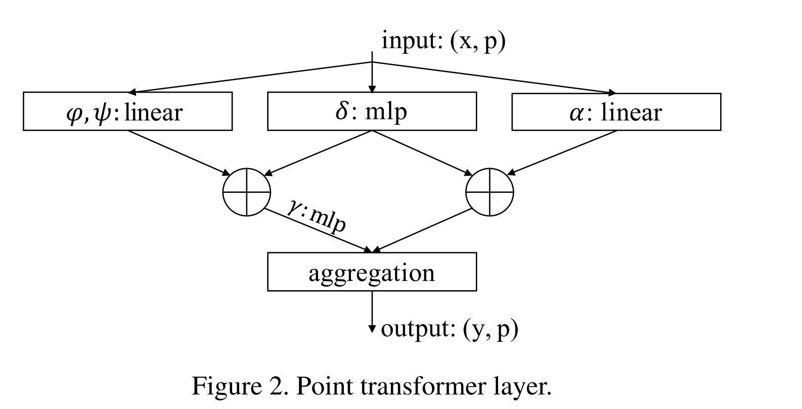
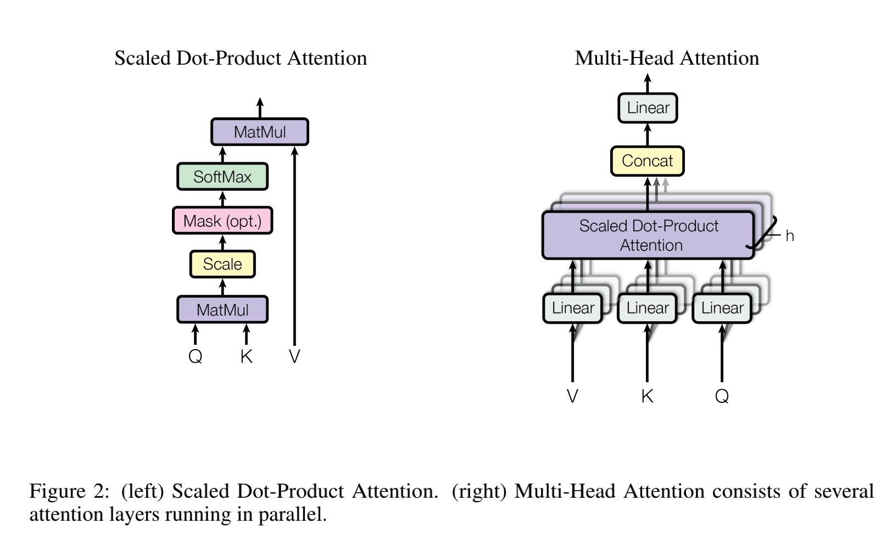

<!DOCTYPE html>
<html xmlns="http://www.w3.org/1999/xhtml" lang="zh" xml:lang="zh">
<head>
  <meta charset="utf-8" />
  <meta name="generator" content="pandoc" />
  <meta name="viewport" content="width=device-width, initial-scale=1.0, user-scalable=yes" />
  <meta name="last_modified" content="2021-02-21T16:54:28Z" />
  <meta name="published" content="Feb 10, 2021" />
  <title>Attention Is All You Need</title>
  <link rel="stylesheet" href="/static/style.css" />
  <link rel="stylesheet" href="/static/syntax-highlighting.css" />
  <style>
      code{white-space: pre-wrap;}
      span.smallcaps{font-variant: small-caps;}
      span.underline{text-decoration: underline;}
      div.column{display: inline-block; vertical-align: top; width: 50%;}
  </style>
  <script src="https://cdn.jsdelivr.net/npm/mathjax@3/es5/tex-chtml-full.js" type="text/javascript"></script>
  <!--[if lt IE 9]>
    <script src="//cdnjs.cloudflare.com/ajax/libs/html5shiv/3.7.3/html5shiv-printshiv.min.js"></script>
  <![endif]-->
  <link rel="icon" href="/static/favicon.ico" type="image/x-icon"/> <link rel="shortcut icon" href="/static/favicon.ico" type="image/x-icon" />
  <meta name="author" content="Yanjie Ze">
  <meta name="viewport" content="width=device-width, initial-scale=1" />
  <script> window.dataLayer = window.dataLayer || []; function gtag(){dataLayer.push(arguments);} gtag('js', new Date());
  gtag('config', 'UA-116308654-1'); </script>
</head>
<body>
<a id="return" href="/">  </a>
<header id="title-block-header">
<h1 class="title">Attention Is All You Need</h1>
<p class="date">Feb 10, 2021</p>
</header>
<p>今天就来读一读大名鼎鼎的Attention，一个在图像/文本都能用的机制。</p>
下图为Transformer的结构。
<center>

</center>
<p>在attention中，query, key,value经常被提到，这里有一个解释：<a href="https://stats.stackexchange.com/questions/421935/what-exactly-are-keys-queries-and-values-in-attention-mechanisms">What exactly are keys, queries, and values in attention mechanisms?</a></p>
<h1 id="encoder-and-decoder-stacks">Encoder and Decoder Stacks</h1>
<p><strong>Encoder</strong>: 6个不同的层，每层有两个子层。第一层，multi-head self-attention mechanism。第二层， 简单的positionwise fully connected feed-forward network。每两个子层间有residual connection，然后用layer normalization。即，每个子层的输出是： <span class="math display">\[
LayerNomrm(x+Sublayer(x))
\]</span> 为了方便residual connection，输出维度都为: <span class="math display">\[
d_{model}=512
\]</span></p>
<p><strong>Decoder</strong>: 6个不同的层。除了Encoder里有的两个子层，还加了第三个子层，对于encoder层的输出使用multi-head attention。也使用了residual connection 和 layer normalization。此外，对self-attention layer做了一些修改，使得其输出只与前面的位置有关。</p>
<h1 id="attention">Attention</h1>
<center>

</center>
<p><strong>Scaled Dot-Product Attention</strong>: <span class="math display">\[
Attention(Q,K,V)=softmax(\frac{QK^T}{\sqrt{d_k}})V
\]</span> 其中，Q是query的矩阵，K是key的矩阵，V是value的矩阵，d_k是key的维度。</p>
<p><strong>除以d_k的原因</strong>：怀疑在d_k很大的时候，函数会进入softmax梯度很小的区域，所以除以d_k。</p>
<p><strong>Multi-Head Attention</strong>: <span class="math display">\[
MultiHead(Q,K,V)=Concat(head_1,...,head_h)W^O\\
where\ head_i=Attention(QW_i^Q,KW_i^K,VW_i^V)
\]</span></p>
<a style="color:black;font-size:2em;float:right;margin-right:30px;margin-bottom:40px;" href="../">[Return to the homepage]</a>
<script>
var code_blocks = document.querySelectorAll("pre.sourceCode");
code_blocks.forEach(function(block) {
  block.classList.add("numberSource");
  block.classList.add("numberLines");
});
</script>
</body>
</html>
